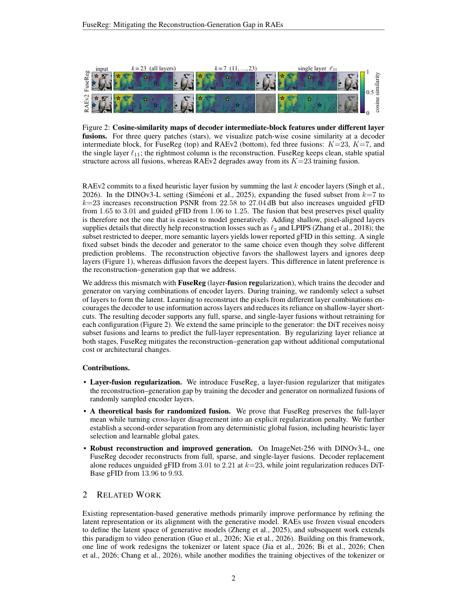

#1
★ 8/10
FuseReg: Regularizing Layer Fusion Mitigates the Reconstruction-Generation Gap in Representation Autoencoders
FuseReg: Regularizing Layer Fusion Mitigates the Reconstruction-Generation Gap in Representation Autoencoders

图 Figure · Page 2 of paper
🎯 （AI 中文深度分析暂不可用：Anthropic API 额度不足。英文栏为论文原文摘要，下方链接均可正常访问。）
Representation autoencoders (RAEs) reuse features from a pretrained visual encoder as reconstruction and diffusion latents, integrating strong visual representations into image generation
| 维度 | 中文 | English |
|---|---|---|
| ❓ 待解决 的问题 |
（AI 中文深度分析暂不可用：Anthropic API 额度不足。英文栏为论文原文摘要，下方链接均可正常访问。） | Representation autoencoders (RAEs) reuse features from a pretrained visual encoder as reconstruction and diffusion latents, integrating strong visual representations into image generation. However, RAEs still need to decide which encoder layers form the shared latent space for the generator and pixel decoder. This choice involves a trade-off. Shallower layers tend to preserve fine pixel details better, while deeper layers tend to yield better generation metrics. A fixed heuristic layer fusion therefore couples two stages that benefit from different information. We introduce FuseReg, which replaces heuristic feature selection with training over random subsets of encoder layers. We theoretically analyze the underlying mechanism: subset sampling explicitly penalizes sensitivity to cross-layer disagreement. On ImageNet-256 with DINOv3-L, a single FuseReg decoder reconstructs from full, sparse, and single-layer fusions without retraining, achieving higher PSNR than decoders specialized to fixed fusions. This flexibility also benefits generation: decoder replacement alone reduces unguided gFID by 27% with an unchanged RAEv2 DiT-XL generator. The same regularization principle extends to diffusion training, with joint regularization of both stages reducing unguided gFID by 29% on DiT-Base. These results show that training downstream models for layer-fusion robustness narrows the reconstruction-generation gap without modifying the pretrained encoder. |
| 💡 解决 的亮点 |
（AI 中文深度分析暂不可用：Anthropic API 额度不足。英文栏为论文原文摘要，下方链接均可正常访问。） | See the paper’s original abstract in the "Problem / 背景" row above. |
| 🧪 实验 内容 |
（AI 中文深度分析暂不可用：Anthropic API 额度不足。英文栏为论文原文摘要，下方链接均可正常访问。） | See the paper’s original abstract in the "Problem / 背景" row above. |
| 📊 实验 结果 |
（AI 中文深度分析暂不可用：Anthropic API 额度不足。英文栏为论文原文摘要，下方链接均可正常访问。） | See the paper’s original abstract in the "Problem / 背景" row above. |
| 🏁 结论 | （AI 中文深度分析暂不可用：Anthropic API 额度不足。英文栏为论文原文摘要，下方链接均可正常访问。） | See the paper’s original abstract in the "Problem / 背景" row above. |
| 🔗 论文 链接 |
arXiv: 2609.31620v1 · 📥 PDF | |
⚙️ Method · 方法详解
（AI 中文深度分析暂不可用：Anthropic API 额度不足。英文栏为论文原文摘要，下方链接均可正常访问。）
See the paper’s original abstract in the "Problem / 背景" row above.
🌟 Why It Matters · 为什么重要
（AI 中文深度分析暂不可用：Anthropic API 额度不足。英文栏为论文原文摘要，下方链接均可正常访问。）
See the paper’s original abstract in the "Problem / 背景" row above.